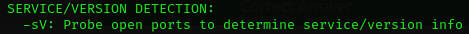

Nmap
Task 1 - Deploy
Press "Start Machine" and press complete
Task 2 - Introduction
What networking constructs are used to direct traffic to the right application on a server?
Ports
How many of these are available on any network-enabled computer?
65535
[Research] How many of these are considered "well-known"? (These are the "standard" numbers mentioned in the task)
1024
Task 3 - Nmap Switches
What is the first switch listed in the help menu for a 'Syn Scan' (more on this later!)?
-sS

Which switch would you use for a "UDP scan"?
-sU

If you wanted to detect which operating system the target is running on, which switch would you use?
-O

Nmap provides a switch to detect the version of the services running on the target. What is this switch?
-sV
The default output provided by nmap often does not provide enough information for a pentester. How would you increase the verbosity?
-v

Verbosity level one is good, but verbosity level two is better! How would you set the verbosity level to two?
(Note: it's highly advisable to always use at least this option)
-vv
We should always save the output of our scans -- this means that we only need to run the scan once (reducing network traffic and thus chance of detection), and gives us a reference to use when writing reports for clients.
What switch would you use to save the nmap results in three major formats?
-oA
What switch would you use to save the nmap results in a "normal" format?
-oN
A very useful output format: how would you save results in a "grepable" format?
-oG

Sometimes the results we're getting just aren't enough. If we don't care about how loud we are, we can enable "aggressive" mode. This is a shorthand switch that activates service detection, operating system detection, a traceroute and common script scanning.
How would you activate this setting?
-A

Nmap offers five levels of "timing" template. These are essentially used to increase the speed your scan runs at. Be careful though: higher speeds are noisier, and can incur errors!
How would you set the timing template to level 5?
-T5

We can also choose which port(s) to scan.
How would you tell nmap to only scan port 80?
-p 80

How would you tell nmap to scan ports 1000-1500?
-p 1000-1500
A very useful option that should not be ignored:
How would you tell nmap to scan all ports?
-p-
How would you activate a script from the nmap scripting library (lots more on this later!)?
--script

How would you activate all of the scripts in the "vuln" category?
--script=vuln
What networking constructs are used to direct traffic to the right application on a server?
Ports
What networking constructs are used to direct traffic to the right application on a server?
Ports
What networking constructs are used to direct traffic to the right application on a server?
Ports
Task 4 - Running Your First few Commands
If we wanted to output the text "TryHackMe", what would our command be?
echo TryHackMe

What is the username of who you're logged in as on your deployed Linux machine?
tryHackMe
Task 5 - Interacting With the Filesystem!
On the Linux machine that you deploy, how many folders are there?
4

Which directory contains a file?
folder4

What is the contents of this file?
Hello World

Use the cd command to navigate to this file and find out the new current working directory. What is the path?
/home/tryhackme/folder4

Task 6 - Searching for Files
Use grep on "access.log" to find the flag that has a prefix of "THM". What is the flag?
THM{ACCESS}

Task 7 - An Introduction to Shell Operators
If we wanted to run a command in the background, what operator would we want to use?
&
If I wanted to replace the contents of a file named "passwords" with the word "password123", what would my command be?
echo password123 > passwords

Now if I wanted to add "tryhackme" to this file named "passwords" but also keep "passwords123", what would my command be
echo tryhackme >> passwords

Task 8- Conclusions & Summaries
Read and press complete
Task 9- Linux Fundamentals Part 2
Read and press complete